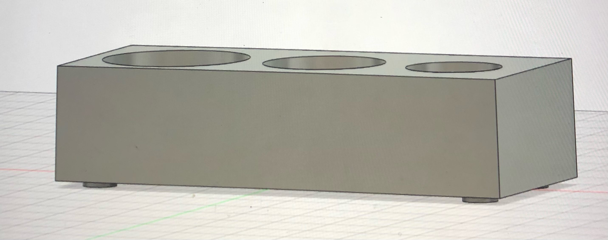
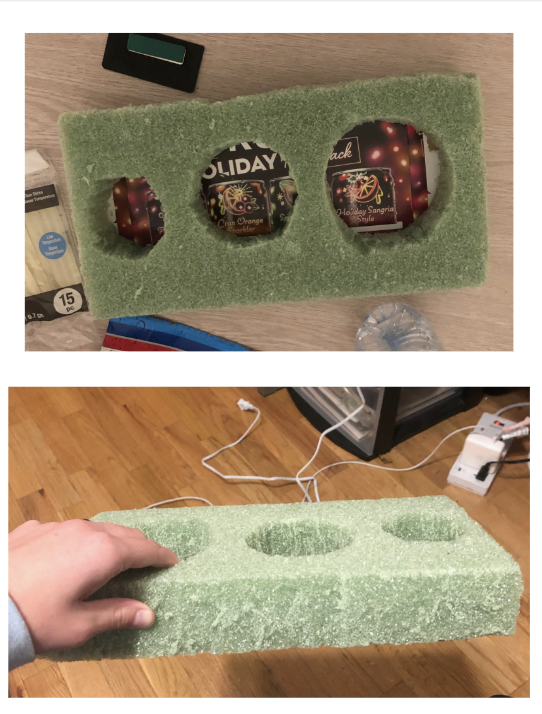

Accessible Water Bottle Opener
For this assignment we had to design and protoype a product that targeted users with a certain disability, i.e blindness, deafness, missing limbs, etc. Our product was meant to make the user experience for that group easier and better than whatever products exist today. I decided to design a water bottle opener for grpups with missing arms, hands and/or low dexterity. Coloradans use their water bottles very frequently, and it seems challenging if not impossible for users with these disabilities to screw the lid on and off. Below are photos of my design and prototype. I cut three holes to allow for a wider range of water bottle sizes- the first hole being designed for a 40oz, the second for 32oz and the third for an average plastic water bottle.

